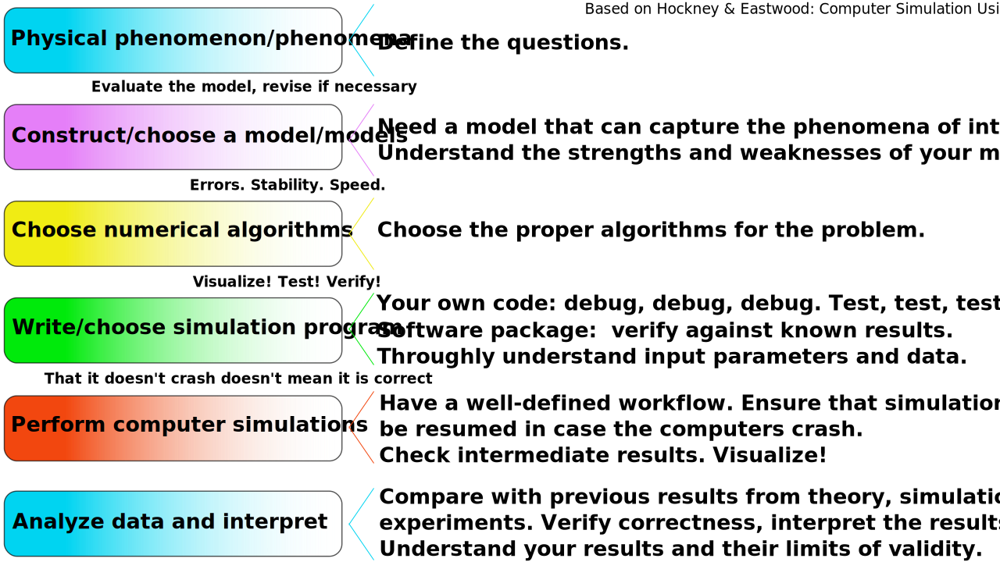

%%html
<style>
code.lblue{
color: #1371a9;
}
pre,
code.wlblue{
color: #1371a9;
background-color: white;
}
code.com{
color: #f603ed;
}
b.lblue{
color: #1371a9;
}
div.int{
margin-left: 40px;
}
div.red{
margin-left: 10px;
border: 1px solid red;
padding: 10px;
}
div.clblue{
margin-left: 10px;
border: 1px solid #1371a9;
padding: 10px;
}
div.try{
margin-left: 10px;
border: 1px solid #1371a9;
padding: 10px;
}
div.info{
margin-left: 10px;
border: 1px solid #1371a9;
padding: 10px;
}
table.lblue{
margin-left: 2px;
border: 1px solid #1371a9;
padding: 10px;
}
</style>
General aspects of modeling and computer simulations¶
Big Science. Hallelujah. Big Science. Yodellayheehoo. You know. I think we should put some mountains here.
Otherwise, what are all the characters going to fall off of?
And what about stairs? Yodellayheehoo. Ooo coo coo. -Laurie Anderson, Big Science
Before setting up our own simulations, let’s discuss a few general and important aspects that relate to all computer simulations and modeling.
|  |
| Figure: Some general aspects about modeling and computer simulations. Building a model and setting up simulations is a complex process and each stage needs to be considered carefully and validated extensively. Mistake at any level can render the whole process wrong with heaps of meaningless data. That happens more frequently that one would expect; that the software doesn't crash doesn't imply anything about the correctness of the results. |
Let’s make consider the items in the Figure using an example.
Physical phenomenon/phenomena: Let’s use the behavior of bulk water as an example. We need to decide what we wish to model. Liquid-gas or liquid-ice phase transition? Structure of water? Or perhaps diffusion of water or the dynamics of the hydrogen bond network? One also needs to review previous research to know what kind of problems there have been and what are the undisputed correct results (if any).
Construct/choose a model: We need to decide what is the level, that is, the level of detail, and time and length scales that we are interested in. Let’s assume that we are not interested in quantum mechanical aspects. That suggests the level of classical molecular dynamics. There are tens of existing models including acronyms such as ST2, TIP3P, TIP4P, TIP4P/2005, TIP5P, TIP5P/2008, SPC, SPC/E and so on. How do we know which one(s) to choose? Should one use more than one model? What hsa been done with these models? Is it/are they able to capture the phenomena of interest?
Choose numerical algorithms: Even in the case we are planning to use a software package, we need to decide which one of the algorihms the package offers we should use. For example, for integration of the equations of motions each package offers several options. If we are going to write our own code, then we need to decide which one to implement. How do we deal with interactions? They need to be truncated but what is the most reliable way to do it? Does the system have long range interactions? If so, do we wish to use Fourier transform-based algorithms or real space ones? In either case, there are several choises that one needs to understand. If we are writing out own code, we need to decide how to speed up the simulations - normal MD scales as \(\mathcal{O}(N^2)\) where \(N\) is the number of particles. We can do better using tables or multisteping. Which one to choose? Do we need constant temperature or pressure constant pressure to better mimic experimental conditions? Which method to choose? What kind of boundary conditions do we need? How can we simulate bulk conditions with a relatively small number of particles?
Write/choose a simulation program: Do we need to write our own code or can we use one the existing packages? This problem is very general and we could choose a software package. There are lots of possibilities including Gromacs, NAMD, Amber, CHARMM, DL Poly, LAMMPS and others. Or should we write your own code? If so, which programming language to use? Fortran, C, C++, python, CUDA or something else? Will this program be used in other projects? How much time will it take to write a code, debug and verify it? Do we wish to provide as open source? If so, how will it be maintained? Debugging is the most time consuming and important part!
Perform computer simulations: Before starting simulations: Have you debugged your code or/and checked that the package that you have chosen is appropriate and has no errors in the parts relevant for you? Do you understand the input data and parameters, and the simulation protocol? Imprtant: even the most well-established codes have errors and problems, but the biggest error source of all is the user! Finally, how to run very long runs?
Analyze data and interpret: This is where the interesting part starts - provided we have confidence in our simulations.
Additional questions: What kind of resources are available? How long will the simulations take, that is, how large systems and for how long time can be simulated. How about data storage, is there enough?
In the above, there are several terms and concepts that are new. We will encounter them when we set up simulations. The aim here is to given a rough idea how complex the issue is: Simply downloading a well-known software package and using the default parameters and inputs is not acceptable. The software will run, but there is no guarantee that the results will be correct or relevant. The software is not to blame, it does what the user tells it do. The user is the source of most errors - even if/when there is a bug/bugs (and there are always are some), it is the the user’s responsibility to test and ensure the validity of results. If bugs are found in a published software, one should notify the developers with precise information including test results.
Additional information: Water models¶
To put the example above to further perspective and to give an idea how complex water the simple looking humble water molecule is, below are lists of water models at different levels of description. None of the lists are by no means exhaustive.
Historical:¶
The Rontgen two species model (1897), the Bernal and Fowler model with tetrahedral geometry (1933), Linux Pauling’s model that established clathrate structure (1935), the model of John Pople that show hydrogen bond bending (1951)
Quantum mechanical¶
Classical MD level:¶
TIP = Transferrable Intermolecular Potential
SPC = Simple Point Charge
BF, ST2, TIPS, TIPS2, TIP3P, TIP3Pm, TIP3P/Fs TIP4P, TIP4P-Ew, TIP4P/2005, TIP4P/2005f, TIP4P/\(\varepsilon\), TIP4P/FQ, TIP4P-HB, TIP4P-i, TIPTP/ice, TIP4P-pol, TIP4PQ, TIP4P-QDP, TIP4P-D, TIP5P, TIP5P-E, TIP5P/2019, OPC, SPC, SPC/E, SPC/\(\varepsilon\), SPC/A, SPC/F, SPC/F2, SPC/FQ, SPC/Fw, SPC-pol, SPC/HW
Coarse-grained:¶
MARTINI, MARTINI polarized, ELBA, SIRAH, DPD, Mercedes-Benz, BMW, mW